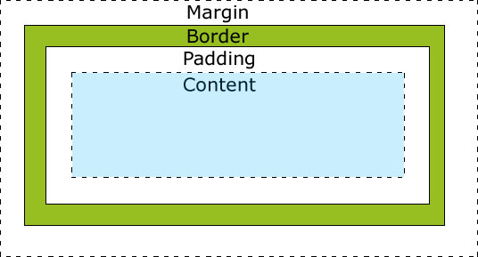

Updated ( 2016-05-25 / 2019-01-10 / 2024-04-04 )
| Property | Value | Description |
|---|---|---|
| box-sizing |
content-box ((Default) content) border-box (content + padding + border) |
- sets which parts of an element are includeed when setting element's size 4.0 -webkit- / 10.0 2.0 -moz- / 29 9.5 8 3.2 -webkit- / 5.1 |
| | | ||
| width |
auto ((Default) browser default) ccsLength nr% (relative to the parent element) |
- sets a fixed-width 1 1 3.5 9 1 |
| min-width |
ccsLength (default 0) nr% (relative to the parent element) |
- sets the minimal width (element can be wider if something forces it (like block-level behaviour or content)) 1 1 4 9 2 |
| max-width |
ccsLength (default 0) nr% (relative to the parent element) |
- sets the maximal width (element can be smaller if nothing forces it (like block-level behaviour or content)) 1 1 4 9 2 |
| | | ||
| height |
auto ((Default) browser default) ccsLength nr% (relative to the parent element) |
- sets a fixed-height 1 1 7 9 1 |
| min-height |
ccsLength (default 0) nr% (relative to the parent element) |
- sets the minimal height (element can be higher if something forces it (like content)) 1 1 4 9 2 |
| max-height |
ccsLength (default 0) nr% (relative to the parent element) |
- sets the maximal height (element can be shorter if nothing forces it (like content)) 1 1 4 9 2 |
| | | ||
| resize |
none (Default) vertical horizontal both (vertical and horizontal) |
- allows the user to resize the element - requires overflow:auto|scroll|hidden; property set 4 4 -moz- / 5 15 79 4 |
| | | ||
| aspect-ratio |
|
- sets the element's aspect ratio (auto calculates the element's height based on the given width) 88 89 74 88 15 |
| Property | Value | Description |
|---|---|---|
| top |
auto ((Default) browser default) cssLength nr% (relative to the parent element) |
- sets the top element position - position:static = no effect - position:relative = relative to the original static position - position:absolute = relative to its parent (parent element must be positioned relative|absoute|fixed) - position:fixed = relative to the viewport 1 1 6 5 1 |
| right |
auto ((Default) browser default) cssLength nr% (relative to the parent element) |
- sets the right element position - position:static = no effect - position:relative = relative to the original static position - position:absolute = relative to its parent (parent element must be positioned relative|absoute|fixed) - position:fixed = relative to the viewport 1 1 5 5.5 1 |
| bottom |
auto ((Default) browser default) cssLength nr% (relative to the parent element) |
- sets the bottom element position - position:static = no effect - position:relative = relative to the original static position - position:absolute = relative to its parent (parent element must be positioned relative|absoute|fixed) - position:fixed = relative to the viewport 1 1 6 5 1 |
| left |
auto ((Default) browser default) cssLength nr% (relative to the parent element) |
- sets the left element position - position:static = no effect - position:relative = relative to the original static position - position:absolute = relative to its parent (parent element must be positioned relative|absoute|fixed) - position:fixed = relative to the viewport 1 1 5 5.5 1 |
- from CSS prespective all HTML elements are considered as 'boxes' (hence the name 'box model')
- a "box-model" is composed of a content a padding a border and a margin

// HTML ---
<div class="boxSizing bs1">
This is the content (<mark>box-sizing:content-box;</mark>)
</div>
<div class="boxSizing bs2">
This is the content (<mark>box-sizing:border-box;</mark>)
</div>
// CSS ---
.boxSizing {
background-color: lightskyblue;
padding: 20px;
margin: 20px;
border: solid 20px black;
width: 400px;
height: 100px;
}
.bs1 {
box-sizing: content-box;
}
.bs2 {
box-sizing: border-box;
}
- resize the red containers to see the effects
- because block level elements get as wide as possible, width-* properties work differently on them as height-* properties (explanaition below!)
width:400px; (solid size)
min-width:400px; (minimum width presered (if parent element gets narrower than this element) but element will extend as much as possible)
min-width:400px; (without content)
max-width:400px; (element never gets wider but narrows down if parent gets narrower)
max-width:400px; (without content)
horizontal resize
-- CODE (HTML) --
<div class="widthModif">
<p> <mark>width:400px;</mark> (solid size) </p>
<p> <mark>min-width:400px;</mark> (minimum width presered (if parent element gets narrower than this element) but element will extend as much as possible) </p>
<p> <mark>min-width:400px;</mark> (without content) </p>
<p> <mark>max-width:400px;</mark> (element never gets wider but narrows down if parent gets narrower) </p>
<p> <mark>max-width:400px;</mark> (without content) </p>
<p> horizontal resize <i class="fas fa-arrow-right"></i> </p>
</div>
-- CODE (CSS) --
.widthModif {
position: relative;
border: solid 5px red;
overflow: auto;
resize: horizontal;
width: 750px;
}
.widthModif > * {
background-color: lightseagreen;
border: solid 3px black;
padding: 3px;
}
.widthModif p:first-child {
width: 400px;
}
.widthModif p:nth-child(2) {
min-width: 400px;
}
.widthModif p:nth-child(3) {
min-width: 400px;
}
.widthModif p:nth-child(4) {
max-width: 400px;
}
.widthModif p:nth-child(5) {
max-width: 400px;
}
.widthModif p:nth-child(6) {
opacity: 0.3;
position: absolute;
border: none;
background-color: transparent;
bottom: -15px;
right: 10px;
z-index: 1;
}
height:200px; (solid size)
min-height:200px; (at least 200px or larger)
- this container is minimum 200px, if its content gets larger the height will be rised
-------------------
-------------------
-------------------
-------------------
min-height:200px; (without content)
max-height:200px; (maximum 200px or smaller)
- this container gets maximum 200px or smaller
- the text overflows because the container cannot get higher
-------------------
-------------------
-------------------
max-height:200px; (without content)
-- CODE (HTML) --
<div class="heightModif">
<p> <mark>height:200px;</mark> (solid size) </p>
<p>
<mark>min-height:200px;</mark> (at least 200px or larger) <br>
- this container is minimum 200px, if its content gets larger the height will be rised <br>
------------------- <br>
------------------- <br>
------------------- <br>
------------------- <br>
</p>
<p> <mark>min-height:200px;</mark> (without content) </p>
<p>
<mark>max-height:200px;</mark> (maximum 200px or smaller) <br>
- this container gets maximum 200px or smaller <br>
- the text overflows because the container cannot get higher <br>
------------------- <br>
------------------- <br>
------------------- <br>
</p>
<p> <mark>max-height:200px;</mark> (without content) </p>
</div>
-- CODE (CSS) --
.heightModif {
position: relative;
border: solid 5px red;
overflow: auto;
width: auto;
height: 250px;
margin-top: 30px;
}
.heightModif > * {
background-color: lightseagreen;
border: solid 3px black;
padding: 3px;
width: 250px;
display: inline-block;
vertical-align: text-top;
margin-top: 0;
}
.heightModif p:first-child {
height: 75px;
}
.heightModif p:nth-child(2) {
min-height: 75px;
}
.heightModif p:nth-child(3) {
min-height: 75px;
}
.heightModif p:nth-child(4) {
max-height: 75px;
}
.heightModif p:nth-child(5) {
max-height: 75px;
}
- this block level elemet gets as wide as it can but gets as height as its content, this is the reason why the min-width takes the full width but the min-height takes only the necessary space for its content!
- BLOCK LEVEL ELEMENT
- min-width:1000px; (element takes the full available width because of the block level behaviour)
- min-height:100px; (element is 100px height, because the content does not forces it to get heigher)
- INLINE-BLOCK ELEMENT
- min-width:1000px; (element is 1000px wide because the inline-block element does take only the necessary width)
- min-height:100px; (element is 100px height, because the content does not forces it to get heigher)
-- CODE (HTML) --
<p id="blockT">
- <b>BLOCK LEVEL ELEMENT</b><br>
- <mark>min-width:1000px;</mark> (element takes the full available width because of the block level behaviour) <br>
- <mark>min-height:100px;</mark> (element is 100px height, because the content does not forces it to get heigher)
</p>
<p id="inline_bT">
- <b>INLINE-BLOCK ELEMENT</b><br>
- <mark>min-width:1000px;</mark> (element is 1000px wide because the inline-block element does take only the necessary width) <br>
- <mark>min-height:100px;</mark> (element is 100px height, because the content does not forces it to get heigher)
</p>
-- CODE (CSS) --
#blockT {
background-color: lightseagreen;
border: solid 3px black;
padding: 3px;
min-width: 1000px;
min-height: 100px;
}
#inline_bT {
display: inline-block;
background-color: lightseagreen;
border: solid 3px black;
padding: 3px;
min-width: 1000px;
min-height: 100px;
}
// HTML ----
<div class="resize-H">
This box is resizable horizontaly
</div>
<div class="resize-V">
This box is resizable verticaly
</div>
<div class="resize-HandV">
This box is resizable both horizontaly and verticaly
</div>
// CSS ---
[class|=resize]{
float: left;
border: solid 2px black;
background-color: yellowgreen;
font-weight: bold;
padding: 30px;
margin: 20px;
}
.resize-H{
resize: horizontal;
overflow: auto;
}
.resize-V{
resize: vertical;
overflow: scroll;
}
.resize-HandV{
resize: both;
overflow: hidden;
}
- width set to 200px, the height is controlled by aspect ratio
// HTML ----
<div class="aspectRatio1"> aspect ratio: 16 / 9 </div>
<div class="aspectRatio2"> aspect ratio: 4 / 3 </div>
<div class="aspectRatio3"> aspect ratio: 1 / 1 </div>
// CSS ---
[class^=aspectRatio] {
display: inline-block;
background-color: beige;
border: solid 2px black;
width: 250px;
}
.aspectRatio1 {
aspect-ratio: 16 / 9;
}
.aspectRatio2 {
aspect-ratio: 4 / 3;
}
.aspectRatio3 {
aspect-ratio: 1 / 1;
}
- every element has left:20px; and top:20px;set
position:static; (default value) NOT AFFECTED!
position:relative; placed relative to its original "static" position
position:absolute; placed relative to its parent
position:fixed; placed relative to the viewport
// HTML ----
<p class="positioned"> <mark>position:static;</mark> (default value) NOT AFFECTED! </p>
<p class="positioned pos_rel"> <mark>position:relative;</mark> placed relative to its original "static" position </p>
<div style="width:90%; height:150px; border:solid black 5px; position:relative; box-sizing: border-box; margin:25px 30px;">
<p class="positioned pos_abs"> <mark>position:absolute;</mark> placed relative to its parent </p>
</div>
<p class="positioned pos_st"> <mark>position:fixed;</mark> placed relative to the viewport </p>
// CSS ----
.positioned {
background-color: yellow;
width: 700px;
border: black 2px solid;
padding: 5px;
margin: 0;
left: 20px;
top: 20px;
}
.pos_rel {
position: relative;
}
.pos_abs {
position: absolute;
}
.pos_st {
position: fixed;
left: 20px;
}